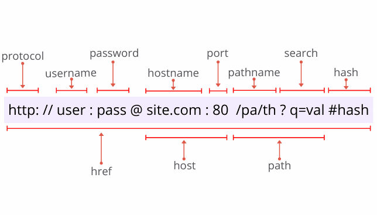

Url Parsing

URL parsing is the process of breaking down a Uniform Resource Locator (URL) into its constituent parts to understand its components and their meanings. A URL is used to specify the address of a resource on the internet and typically consists of several components. Here's a detailed explanation of URL parsing:
1. Scheme (Protocol):
The scheme or protocol specifies the method or protocol used to access the resource. Common schemes include:
http - Hypertext Transfer Protocol (used for regular web pages).
https - Secure Hypertext Transfer Protocol (encrypted version of HTTP).
ftp - File Transfer Protocol (used for file downloads/upload).
mailto - Email addresses.
file - Local file system resource.
2. Authority (Domain and Port):
The authority component typically consists of two parts:
Domain (or Host): This is the human-readable address of the server where the resource is hosted. It can be an IP address (e.g., 192.168.1.1) or a domain name (e.g., www.example.com).
Port: The port number is optional and follows the domain, separated by a colon (e.g., :8080). It specifies the port on the server to connect to. If omitted, the default port for the scheme is used (e.g., 80 for HTTP, 443 for HTTPS).
3. Path:
The path component specifies the specific location or file on the server where the resource is located. It often resembles a hierarchical structure with forward slashes ("/") to separate directories or parts of the path (e.g., /folder/subfolder/resource.html).
4. Query Parameters:
The query component appears after a question mark ("?") and contains key-value pairs separated by ampersands ("&"). It is used to pass data to the server, typically for search or filtering purposes. For example, in the URL https://www.example.com/search?q=URL+parsing&page=1, the query parameters are q=URL+parsing and page=1.
5. Fragment Identifier (Hash):
The fragment identifier is preceded by a hash ("#") and is used to specify a specific section or anchor within the resource. It's often used in web pages to link to a particular section of a page. For example, in the URL https://www.example.com/page#section2, the fragment identifier is section2.
Here's an example URL broken down into its components:
URL: https://www.example.com:8080/path/to/resource.html?q=search&lang=en#section2
Scheme: https
Authority:
Domain: www.example.com
Port: 8080
Path: /path/to/resource.html
Query Parameters: q=search lang=en
Fragment Identifier: section2
URL parsing is a fundamental process in web communication as it helps browsers and web servers understand how to access and retrieve resources based on the provided URL. Each component serves a specific purpose, and parsing allows for the proper construction of HTTP requests to fetch web content.